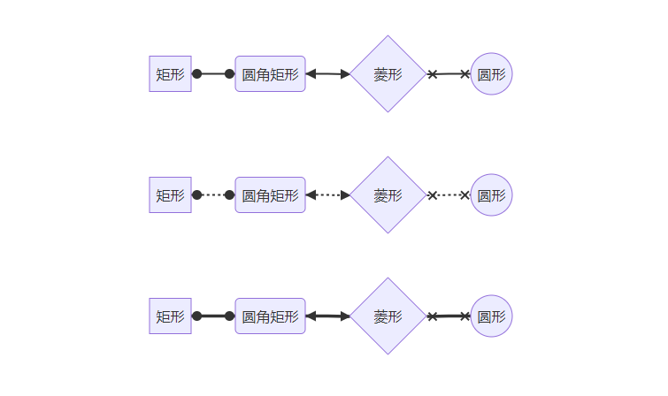
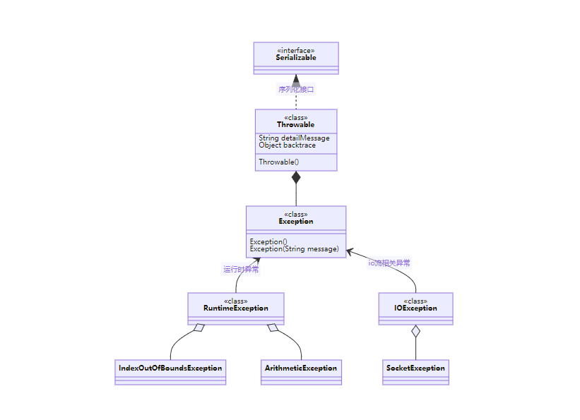
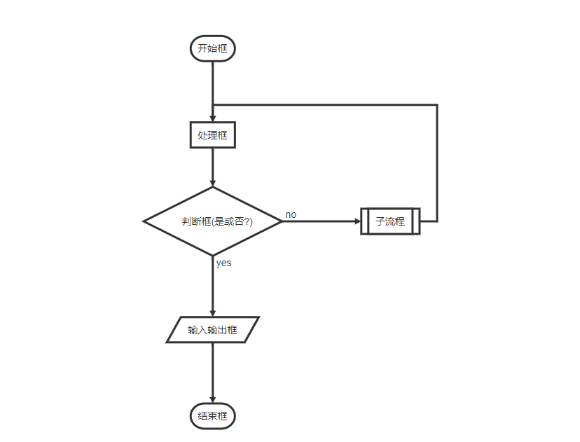
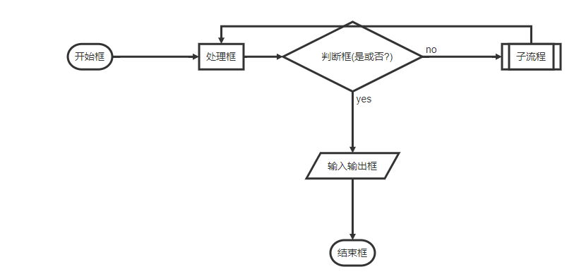
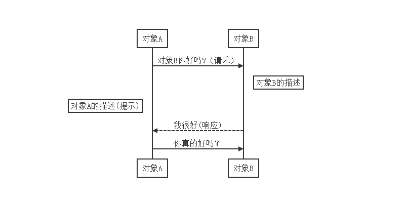
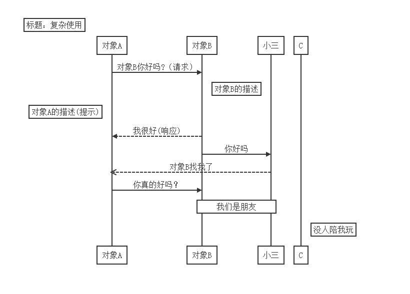

一、Markdown 流程图语法示例
- 不在 Markdown 涵盖范围之内的标签，都可以直接在文档里面用 HTML 撰写。
- 目前支持的 HTML 元素有：
<kbd>、<b>、<i>、<em>、<sup>、<sub><br> - 使用 Ctrl+Alt+Del 重启电脑
二、mermaid
- Mermaid是一种基于Javascript的绘图工具，使用类似于Markdown的语法，
- 使用户可以方便快捷地通过代码创建图表。
Mermaid能绘制哪些图？
- 饼状图： 使用
pie关键字 - 流程图： 使用
graph或flowchart关键字 - 时序图： 使用
sequenceDiagram关键字 - 甘特图： 使用
gantt关键字 - 类图： 使用
classDiagram关键字 - 状态图： 使用
stateDiagram关键字 - 用户旅程图： 使用
journey关键字 - 具体用法后文将详细介绍
1、饼状图
- 这种语法最简单
- 第一行指定关键字为
pie,后面就是标题加内容了 - 还有就是标题是可选的，标题下面就是数据部分
- 代码示例如下:
// 下面我多了个空格,后面例子也是多个空格 |
- 示例图如下:
pie
title 今天晚上吃什么？
"火锅" : 8
"外卖" : 60
"自己煮" : 8
"海底捞" : 9
"海鲜" : 5
"烧烤" : 5
"不吃" : 5
- 通过示例图和代码示例,应该就知道语法怎样写了
2、流程图
- 代码开头第一行：graph +“方向”
- 这个方向是指流程图走的方向，一共有四个方向
- 上往下(TD/TB)、下往上(BT,DT有些编辑器不支持:Typora)、左往右(LR)、右往左(RL)
T=TopD/B=Down/BottomL=LeftR=Right- 注释：在行首加入
%%即可
①、图案:
- 如下：方括号代表矩形，圆括号代表圆角矩形，大括号代表菱形，就不一一解释了。
[矩形]、(圆角矩形)、{菱形}、((圆形))([体育场形])、[[子程序形]]、[(圆柱形)]、[/平行四边形/]、[\反向平行四边形\]、[/梯形\]、[\反向梯形/]
②、线条样式
- 虚线箭头：
-.-> - 实线箭头:
--> - 粗实线箭头:
==> - 文本箭头
- 实线文本箭头:
--本文内容--> - 粗实线文本箭头:
==本文内容==> - 虚线文本箭头:
-.文本.->
- 实线文本箭头:
- 无箭头: 就是以上箭头方式,去掉箭头即可,例:
-.-、---、===
③、形状与线条连接示例代码:
`` `mermaid |
形状与线条连接示例图如下：
graph LR
A[矩形] -.->B(圆角矩形) --> C{菱形} ==> D((圆形))
E([体育场形])--实线文本--> F[[子程序形]]==粗实线文本==>G[(圆柱形)]-.虚线文本.->H
I[/平行四边形/]-.-J[\反向平行四边形\]---K[/梯形\]===L[\反向梯形/]
④、还有其他连线:
- 就是把上面所有连线方式的箭头改为两头都有特殊符号:
o、x、< > - 但是要把
graph改为flowchart - 如下示例
`` `mermaid |
示例图:

⑤、实战综合示例
- 代码示例
`` `mermaid |
示例图:
graph RL
User((用户))--1.用户登录-->Login(登录)
Login --2.查询-->SERVER[服务器]
subgraph 查询数据库
SERVER--3.查询数据-->DB[(数据库)]
DB--4.返回结果-->SERVER
end
SERVER--5.校验数据-->Condition{判断}
Condition -->|校验成功| OK[登录成功]
Condition -->|校验失败| ERR[登录失败]
OK-->SYS[进入系统]
ERR -->|返回登录页面,重新登录| Login
- subgraph 子图，可以把几个步骤合到一起，
direction定义方向(但是Typora不支持，)
subgraph title |
3、时序图
- 先啥也不说,先看简单源码示例:
`` `mermaid |
示例图如下:
%% 时序图例子,-> 直线，-->虚线，->>实线箭头 sequenceDiagram autonumber participant Z as 张三 participant L as 李四 participant W as 王五 Note over Z,W: 张三,李四,王五,
小时候是最好的玩伴,现在80年过去了... Z->>W: 老王最近还好吗？ Note left of Z: 除了老张,当过兵,
身体比较好之外,其他两人都不太行了 loop 健康检查 W->>W: 与疾病战斗 end Note right of W: 合理进食
看医生
打点滴... W-->>Z: 还行,老了走不动了 !! L->>Z: 老张,你呢怎样了 alt 健康#9829; Z-->>L: 很好! else 去世 Z-->>L: 对不起,老张已经走了!!! end
- 语法结构,第一行使用:
sequenceDiagram - 使用：
autonumber可以自动标注次数 - 使用别名:
participant 别名 as 显示名称 - 注释标注内容:
- 格式:
Note over 参与者1,参与者2: 注释内容两个参与者之间显示 - 格式:
Note left of 参与者1: 注释内容在 参与者1 左边显示 - 格式:
Note right of 参与者1: 注释内容在 参与者1 右边显示
- 格式:
- 线条:
-> 实线、->>实线箭头、-->虚线、-->>虚线+箭头、-x带叉的线、 - 背景高亮可以使用：
rect rgb(0, 255, 0) ... end
rect rgba(0, 0, 255, .1) |
- 自循环使用
loop ... end
loop 循环的条件 |
- 判断使用
alt ... else ...else ... end,如果没有else可以使用：opt .... end
alt 条件 1 描述 |
4、甘特图
- 甘特图是一类条形图，由Karol Adamiechi在1896年提出, 而在1910年Henry Gantt也独立的提出了此种图形表示。
- 通常用在对项目终端元素和总结元素的开始及完成时间进行的描述。
| 标记 | 简介 |
|---|---|
| title | 标题 |
| dateFormat | 日期格式 |
| section | 模块,定义纵方向上的 |
| done | 已经完成 |
| active | 当前正在进行 |
| crit | 关键阶段紧急的，将高亮显示 |
| after | 默认从上一项结束时间开始 |
格式：
// 定义日期格式 |
- 如下源码示例
`` `mermaid |
- 示例图如下：
gantt
dateFormat YYYY-MM-DD
title 开发计划
section 需求文档
登录注册:done,login,2021-06-25,2021-06-28
添加好友与分组:add, 2021-06-29,3d
单聊 :active ,chat, 2021-07-01,2d
群聊 :groupChat,after chat,5d
朋友圈 :crit,5d
其他:3d
section 开发
开发登录注册:done,d-login,2021-06-25,24h
开发添加好友与分组:active,d-add,after d-login,5d
开发单聊与群聊:crit,d-chat,after d-add,7d
开发朋友圈:d-friend,after d-chat,7d
section 测试
测试用例与玩耍:active,test,2021-06-25,10d
开始测试部分接口:crit,start-test,after test,11d
- 注意：ID不能重复
5、类图
使用
classDiagram关键字然后和写java代码一样用class定义类，其属性和方法
然后通过线条连接两者之间的关系
格式：
类1 线条 类2:备注线条有：
<|--、*--、o--、..、<-->、--|>、
类的注释：
<<Interface>>表示接口类<<abstract>>表示抽象类<<Service>>表示服务类<<enumeration>>代表一个枚举
源码示例：
`` `mermaid |
示例图：

6、状态图
- 使用
stateDiagram关键字
先上一波源码示例：
`` `mermaid |
示例图：
stateDiagram-v2
[*] --> 静止
静止 --> [*]
静止 --> 走
走 --> 静止
走 --> 跑
跑 --> 走:跑可以停下来就静止，也可以慢下来：走
跑 --> [*]
state if_state <>
[*] --> IsPositive
IsPositive --> ifState
ifState --> False: if n < 0
ifState --> True : if n >= 0
state fork_state <>
[*] --> fork_state
fork_state --> State2
fork_state --> State3
state join_state <>
State2 --> join_state
State3 --> join_state
join_state --> State4
State4 --> [*]
[*] --> First
First --> Second
First --> Third
state First {
[*] --> fir
fir --> [*]
}
state Second {
[*] --> sec
sec --> [*]
}
state Third {
[*] --> thi
thi --> [*]
}
- 有两种特殊状态指示图表的开始和停止。
- 这些是用
[*]语法编写的，转换的方向将其定义为开始或停止状态。 - 转换是一种状态进入另一种状态时的路径，使用箭头“–>”表示
- 在实际使用状态图时，您经常会得到多维的图，因为一个状态可以有多个内部状态。这些在本术语中称为复合状态。
- 为了定义复合状态，您需要使用
state关键字，后跟一个id和{}之间复合状态的主体。 - 如下示例：
[*] --> First |
6、用户旅程图
- 使用
classDiagram关键字 - 格式：
任务:分数：角色列表（多个用逗号隔开）
代码示例：
`` `mermaid |
示例图：
journey
title 我的一天
section 早上
吃饭: 5: Me,Her
跑步: 3: Me
section 工作时间
坐地铁到公司: 5 :Me
上班: 1:Me
section 晚上
睡觉: 5: Me,Her
- 分数越高心情越好
三、flow
标准流程图
代码主要有两个部分组成：
- 第一部分：定义元素
- 第二部分：定义元素的方向
先看看源码示例
`` `flow
st=>start: 开始框
op=>operation: 处理框
cond=>condition: 判断框(是或否?)
sub1=>subroutine: 子流程
io=>inputoutput: 输入输出框
e=>end: 结束框
st->op->cond
cond(yes)->io->e
cond(no)->sub1(right)->op
`` `以上代码的示例图

1、元素的类型
- start # 开始
- end # 结束
- operation # 操作
- subroutine # 子程序
- condition # 条件
- inputoutput # 输入或产出
2、语法
- 格式：
定义元素名称=>元素类型: 显示的节点内容。(冒号后面要有个空格) - 定义元素类型用
=> - 连接两个元素用
-> - 元素的方向可以使用：
left、right、top、bottom.
还是上面的代码示例，只是加个方向，如下：
`` `flow |
- 上面源码示例图如下：

- 对比两个示例，我们知道默认是自上而下。
四、sequence
- 时序图sequence
- 和mermaid的时序图语法一致，只是生成的图，更精简而已。
①、简单示例
`` `sequence |
- 示例图如下：

②、复杂示例
`` `sequence |
- 示例图如下：
